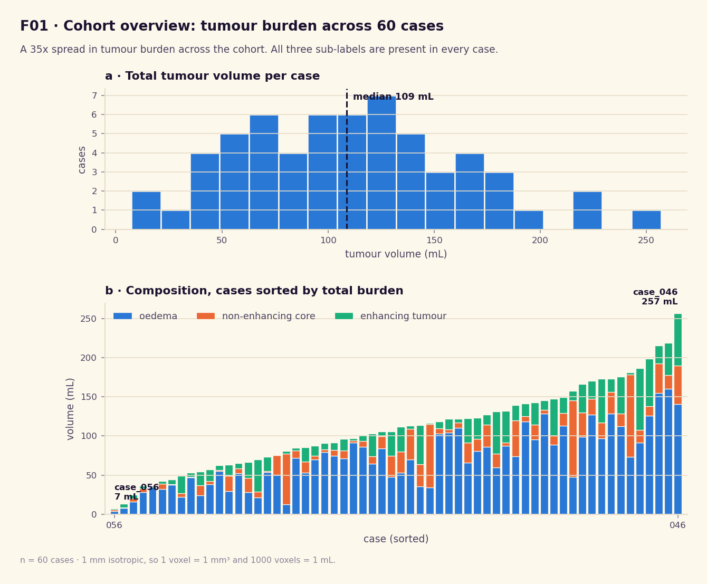
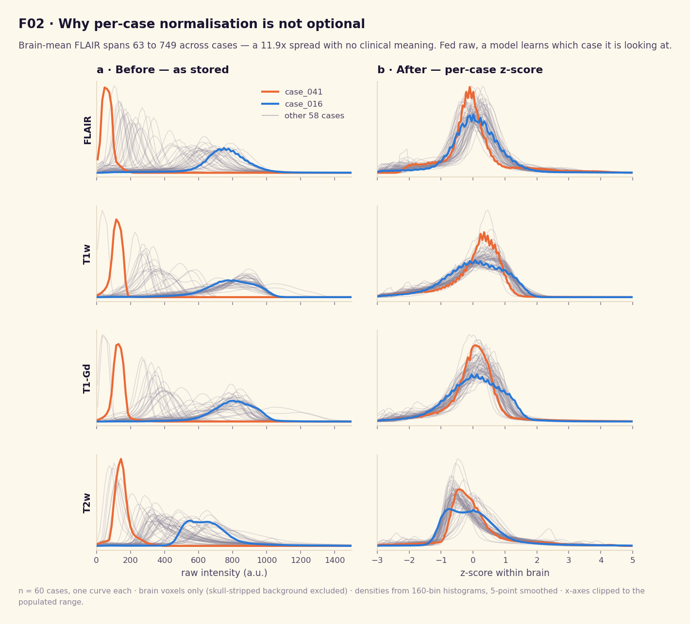
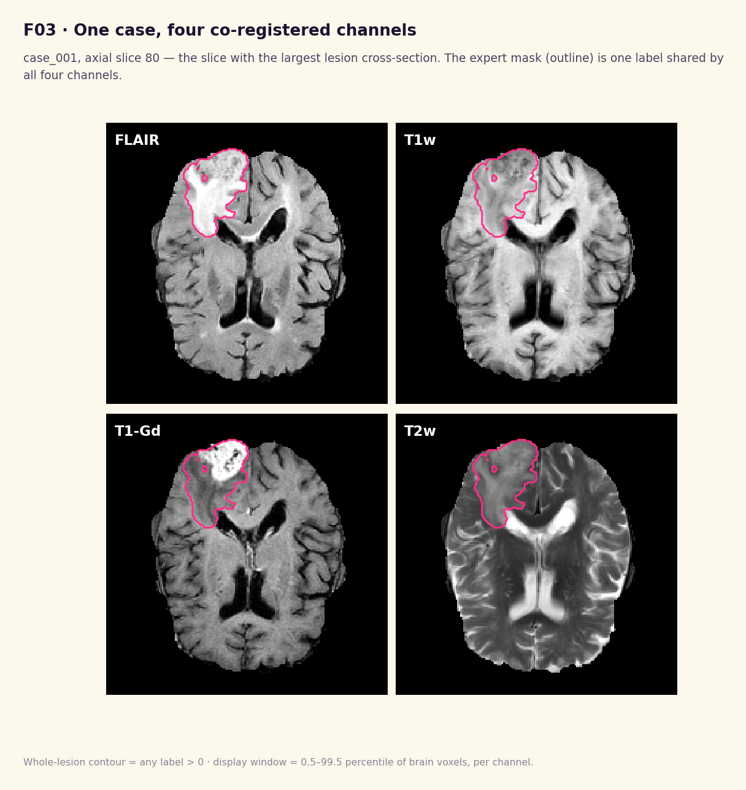
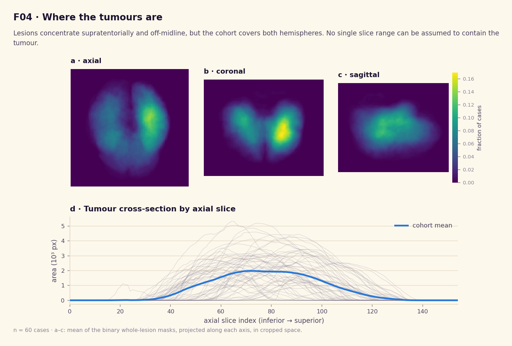
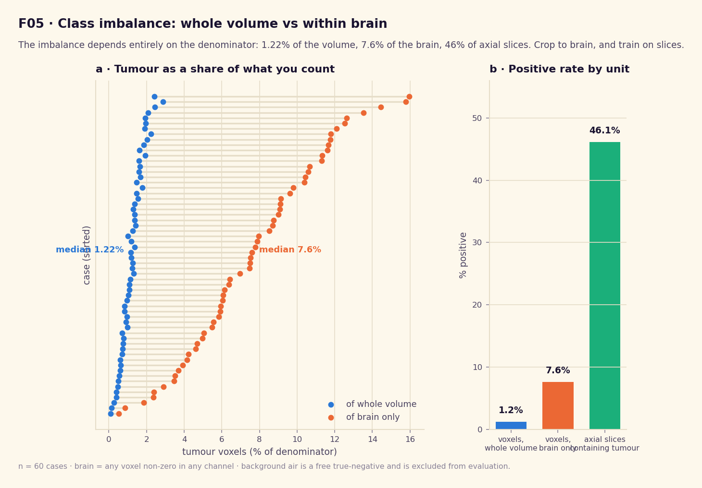

TumorNet 2000 ™
The Internet's #1 Virtual Tumor Detection Lab! 100% Free. Accuracy not guaranteed.
BEST VIEWED IN NETSCAPE NAVIGATOR 4.0 · 800×600 · 16-BIT COLOR
NEW!
HTML 4.01 TRANSITIONAL
THIS SITE IS PERPETUALLY UNDER CONSTRUCTION
ABOUT US ✦ OUR RESEARCH
Every number on this site traces to a figure below. That's rule 2 — see HOW IT WORKS for the full list. n = 60 cases throughout; confidence intervals accompany every point estimate that has one.





Figures F06–F16 (architecture, training curves, per-case Dice, ablations, stress tests) land here once the model is trained — see HOW IT WORKS for where things stand.